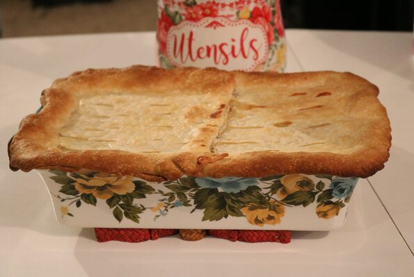

Chicken Pot Pie

Chicken pot pie is my favorite dish from the restaurant Marie Calendars. Instead of having to dine in at Marie Calendars all
all of the time to eat our favorite dish, why not make it ourselves?
Ingredients
- 1 recipe pastry for 9 inche double crust pie
- 2 cups frozen mixed vegetables
- 2 boneless, skinless chicken breast halves, boiled
- 1 teaspoon dried thyme
- 1/2 (10.75 ounce) can condensed cream of celery soup
- 1 (10.75 ounce) can condensed cream of potato soup
Steps
- Preheat oven to 400 degrees F (200 degrees C). Line a 9 inch pie dish with pastry.
- Blanch frozen mixed vegetables for 3 to 4 minutes. Drain.
- Dice chicken and place in a large bowl. Add vegetables, thyme, celery soup
and potato soup. Stir together.
- Pour filling into pastry lined pie dish. Arrange top layer of pie crust,
seal and flute the edges. Cut slits in the top of the crust to allow for steam to escape.
- Place pie on cookie sheet. Put aluminum foil around the pie crust edges.
Bake at 400 degrees F (200 degrees C) for 30 minutes. Remove foil and continue to bake for an additional
30 minutes until golden brown. Remove from oven and let stand for 5 minutes and then serve.
Return to Main Page